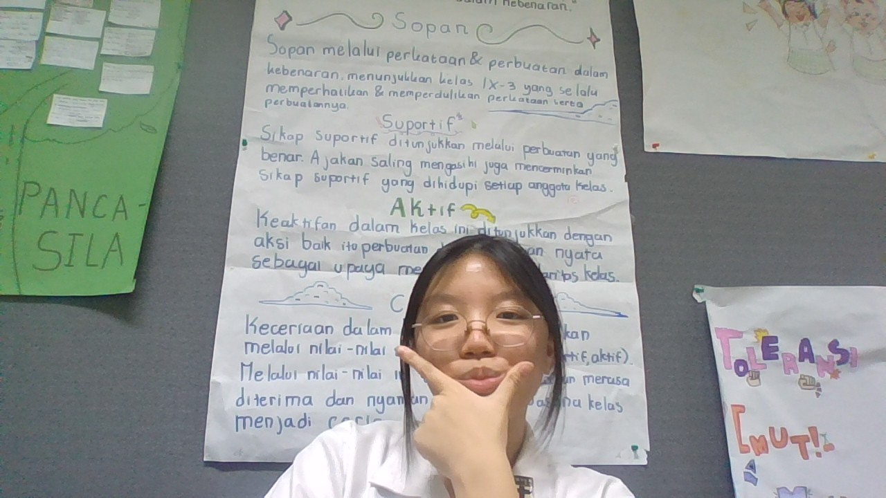

Visi: Mewujudkan Indonesia bersih sampah melalui edukasi digital yang inklusif.
Misi: Menyediakan informasi yang akurat, mudah dipahami, dan menginspirasi aksi nyata bagi masyarakat.
Website EcoAction dibuat sebagai tugas projek untuk mengajak teman-teman sebaya lebih peduli terhadap isu lingkungan yang kian mendesak. Saya percaya bahwa perubahan besar dimulai dari satu klik edukasi dan satu aksi pemilahan sampah.